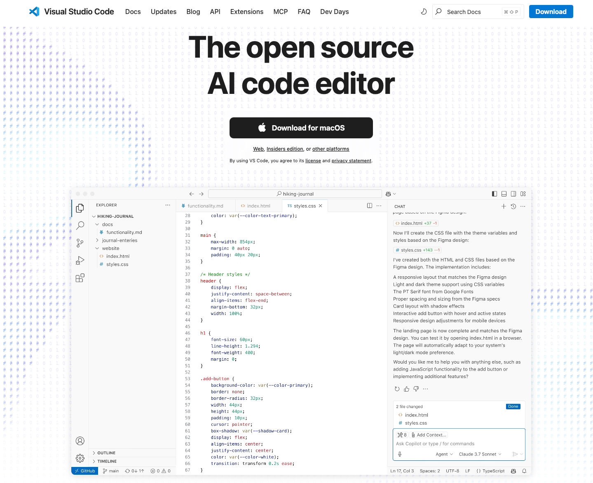
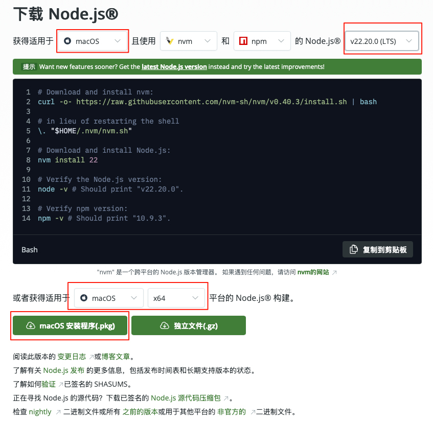

搭建个人博客（笔记）网站
有没有想过设计一个在线笔记本，或者个人博客？
解决两个问题：不会写代码能不能搭建自己的网站？没有服务器和域名怎么部署发布自己的网站？
环境需要
- 开发环境：MacOS / Linux / Windows
- 编译网站源码：node.js
- 编辑网站源码：Gitbook。解决不会写代码的问题，编辑文本也能做网站。
- 部署网站：GitHub。解决没有服务器和域名的问题，直接免费部署发布网站。
1. 工具准备
为了方便编辑文件，这里推荐两款好用的编辑工具，一个是vscode，一个是sublime text，下面是各自的安装的过程。
1.1. 安装vscode
根据自己电脑的操作系统，选择不同的版本下载，然后安装。在vscode官网官网下载安装包，然后双击安装，根据安装指引以此操作即可。

vscode是一个非常强大的编辑器，可以集成很多工具一起使用，非常方便，推荐使用vscode作为编辑器。
1.2. 安装sublime text
sublime text也是一款不错的编辑器，但是没有vscode那般强大，如果只是为了gitbook项目的话，还是绰绰有余的。
进入Sublime Text 的官网，根据操作系统选择下载安装程序。
2. 环境准备
根据自己电脑的操作系统，选择安装不同版本的node.js和Gitbook。因为Gitbook环境需要Nodejs支持，所以需要配置node.js环境。Gitbook配置教程，快速搭建个人博客，制作个人电子书、帮助（说明）文档
2.1. 配置node.js环境
进入node.js官网，点击下载安装程序，这里建议选择18.20.2LTS版本，下载好安装程序就可以双击安装。

安装过程不需要有特殊设置和选择，直接选择【确定】下一步即可。
[!NOTE] 根据操作系统不同，选择不同的版本，本文教程用的操作系统是MacOS M1 12.2。
完成安装之后，可查看安装是否成功。
% node -v
% which node
- 第一个命令查看安装版本，如果能够输出版本信息，表示安装成功。
- 第二个命令可查看安装路径。
[!NOTE] Windows用户可以进入应用程序中查看是否安装成功，或者在配置好环境变量PATH路径的情况下，可以用CMD命令打开命令行终端，用上面的命令查看版本信息。为了方便Gitbook安装，建议配置好环境变量。
2.2. 配置Gitbook环境
[!NOTE] Gitbook环境需要Nodejs支持，配置过程中，可能出现两个重要错误，都与nodejs版本相关。
在nodejs的配置中，已经默认配置了npm，只需要用npm安装Gitbook即可。
% npm install -g gitbook-cli
这里可能出现安装失败，提示错误信息如下
npm ERR! [Error: EACCES: permission denied, mkdir
这个错误提示很简单，就是没有权限，只需要在命令前面加上sudo即可
% sudo npm install -g gitbook-cli
配置完成，即可查看版本信息，如果有正确版本信息，表示安装成功。
% gitbook --version
键入上述命令，将进入Gitbook相关包下载安装时间，只需要等待。但如果选择的nodejs版本过高，可能会出现下面的错误提示。
Installing GitBook 3.2.3
/usr/local/lib/node_modules/gitbook-cli/node_modules/npm/node_modules/graceful-fs/polyfills.js:287
if (cb) cb.apply(this, arguments)
^
TypeError: cb.apply is not a function
at /usr/local/lib/node_modules/gitbook-cli/node_modules/npm/node_modules/graceful-fs/polyfills.js:287:18
at FSReqCallback.oncomplete (node:fs:205:5)
Node.js v20.12.2
根据错误提示信息，找到/usr/local/lib/node_modules/gitbook-cli/node_modules/npm/node_modules/graceful-fs/polyfills.js文件，将下面三行代码注释掉，再次尝试即可顺利完成。
// fs.stat = statFix(fs.stat)
// fs.fstat = statFix(fs.fstat)
// fs.lstat = statFix(fs.lstat)
[!NOTE] 这个错误提示及解决办法，在后面的配置过程中，可能还会用到。
再次看出版本信息，将可以看到Gitbook版本信息。
% gitbook --version
CLI version: 2.3.2
GitBook version: 3.2.3
3. 初始化Gitbook项目
完成上述过程之后，就可以初始化Gitbook项目。在磁盘新建文件夹，然后在该文件目录下初始化一个Gitbook项目。gitbook快速搭建第一个个人博客项目
% pwd
/Documents/ehandlebook/ebook
% gitbook init
此时，可能出现如下错误提示。
TypeError [ERR_INVALID_ARG_TYPE]: The "data" argument must be of type string or an instance of Buffer, TypedArray, or DataView. Received an instance of Promise
这是版本不兼容导致，下面有两个处理办法，本文采用第二个解决方案。
3.1. 版本不兼容解决方案
1、卸载nodejs，更换低版本。
先查看nodejs的安装路径，然后卸载掉已经安装的gitbook，然后将nodejs相关的文件删除。删除完nodejs之后，再次查看其版本信息，是找不到版本信息的。
% which node
/usr/local/bin/node
% sudo npm uninstall -g gitbook
% sudo npm uninstall -g gitbook-cli
% sudo rm -rf /usr/local/bin/npm
% sudo rm -rf /usr/local/share/man/man1/node.1
% sudo rm -rf /usr/local/lib/dtrace/node.d
% sudo rm -rf /usr/local/lib/node_modules/...与node相关
% sudo rm -rf ~/.npm
% sudo rm -rf ~/.node-gyp
% sudo rm /usr/local/bin/node
完成卸载之后，重新下载低版本nodejs安装，安装过程与之前的一样。完成所有的环境配置之后，再次创建gitbook项目，可能还是会出现这个错误，那就再换版本安装。
2、不卸载重装，进入gitbook安装文件，修改相关代码。
用gitbook的debug命令，找到下面版本文件。在版本文件下，找到\3.2.3\lib\init.js文件，将该文件的其中一行代码替换掉。
% gitbook init --debug
/Users/.../.gitbook/versions/3.2.3/
原代码行和替换的代码行
// return fs.writeFile(filePath, summary.toText(extension));
return summary.toText(extension).then(stx=>{return fs.writeFile(filePath, stx);});
完成之后，再次初始化项目，应该可以正常创建。
% gitbook init
warn: no summary file in this book
info: create SUMMARY.md
info: initialization is finished
3.2. 测试
最初采用Sublime Text编辑器管理gitbook项目，它的弊端是不能实时更新网页内容，很多人推荐使用Typora，读者自行尝试吧。后来采用VS code编辑器管理gitbook项目，更加方便，只需要在VS code中加入markdown插件即可。
为了方便对gitbook项目的管理，在gitbook项目中创建npm项目。在gitbook项目的文件目录下，创建npm项目。这里有很多选项，直接回车即可，最后选择yes。
% npm init
类似如下输出，这个过程中会有很多选项，直接回车或者输入相应信息，或者选择yes。
This utility will walk you through creating a package.json file.
It only covers the most common items, and tries to guess sensible defaults.
See `npm help init` for definitive documentation on these fields
and exactly what they do.
Use `npm install <pkg>` afterwards to install a package and
save it as a dependency in the package.json file.
Press ^C at any time to quit.
package name: (ebook)
version: (1.0.0)
description:
entry point: (index.js)
test command:
git repository:
keywords:
author:
license: (ISC)
About to write to /Documents/ehandlebook/ebook/package.json:
{
"name": "ebook",
"version": "1.0.0",
"description": "",
"main": "index.js",
"scripts": {
"test": "echo \"Error: no test specified\" && exit 1"
},
"author": "",
"license": "ISC"
}
Is this OK? (yes)
完成npm项目配置之后，项目中会得到一个package.json文件。
启动项目有两种方式，第一种方式是用gitbook的启动命令。还是在该项目目录下，启动项目。
% gitbook serve
Live reload server started on port: 35729
Press CTRL+C to quit ...
/usr/local/lib/node_modules/gitbook-cli/node_modules/npm/node_modules/graceful-fs/polyfills.js:287
if (cb) cb.apply(this, arguments)
^
TypeError: cb.apply is not a function
at /usr/local/lib/node_modules/gitbook-cli/node_modules/npm/node_modules/graceful-fs/polyfills.js:287:18
很遗憾，可能启动不成功，提示的错误，与前面出现的错误类型一致，找到/usr/local/lib/node_modules/gitbook-cli/node_modules/npm/node_modules/graceful-fs/polyfills.js文件，将下面三行代码注释掉，再次尝试即可顺利完成。
// fs.stat = statFix(fs.stat)
// fs.fstat = statFix(fs.fstat)
// fs.lstat = statFix(fs.lstat)
再次启动，启动之后，会出现一个目录_book，浏览器访问 http://localhost:4000 。
% gitbook serve
> ebook@1.0.0 serve
> gitbook serve
Live reload server started on port: 35729
Press CTRL+C to quit ...
info: 7 plugins are installed
info: loading plugin "livereload"... OK
info: loading plugin "highlight"... OK
info: loading plugin "search"... OK
info: loading plugin "lunr"... OK
info: loading plugin "sharing"... OK
info: loading plugin "fontsettings"... OK
info: loading plugin "theme-default"... OK
info: found 1 pages
info: found 1 asset files
info: >> generation finished with success in 0.1s !
Starting server ...
Serving book on http://localhost:4000
第二种启动方式，在package.json中配置启动项。
{
"name": "ebook",
"version": "1.0.0",
"description": "",
"main": "index.js",
"scripts": {
"serve": "gitbook serve",
"build": "gitbook build"
},
"author": "",
"license": "ISC"
}
启动命令为
% npm run serve
构建项目的命令为
% npm run build
构建项目服务器不会开启，只是对项目进行了最小化和最优化的构建，所以不能通过 http://localhost:4000 访问。
3.3. 添加必要文件
在项目中添加必要文件
% touch book.js
% touch .bookignore
其中book.js暂时放入下面的内容。
module.exports = {
// 书籍信息
title: 'Gitbook应用教程',
description: 'Gitbook快速建立个人博客',
author: '计算机科学实验室',
lang: 'zh-cn',
// 插件列表
plugins: [ ],
// 插件全局配置
pluginsConfig: {
},
// 模板变量
variables: {
// 自定义
},
};
其中.bookignore暂时放入下面的内容。
package.json
package-lock.json
.bookignore
gitbook依次读取.gitignore，.bookignore和.ignore文件，将这些文件里面配置的一些文件和目录排除。用户创建.bookignore文件，在里面可以配置需要忽略的内容。
到这里，就已经完成了Gitbook项目的基本创建，启动服务，已经可以通过http://localhost:4000访问看到网站效果，然后就是丰富网站内容了。
4. MarkDown 语法
GitBook 默认使用MarkDown语法。MarkDown是一种轻量级标记语言，语法简洁，让作者更多地关注内容本身而非排版。它使用易读易写的纯文本格式编写文档，可与 HTML 混编，可导出 HTML、PDF 以及.md格式的文件。Github、Wikipedia 等网站都有使用MarkDown文本。
4.1. 标题
markdown支持6级标题，每一级标题根据#号个数确定，以#号开头。
| 级别 | markdown形式 | html形式 |
|---|---|---|
| 一级标题 | # 标题 |
<h1>标题</h1> |
| 二级标题 | ## 标题 |
<h2>标题</h2> |
| 三级标题 | ### 标题 |
<h3>标题</h3> |
| 四级标题 | #### 标题 |
<h4>标题</h4> |
| 五级标题 | ##### 标题 |
<h5>标题</h5> |
| 六级标题 | ###### 标题 |
<h6>标题</h6> |
4.2. 段落
markdown以空行作为段落的分段标志。
第一段
第二段
4.3. 粗体
单词或短语的前后各添加两个星号（asterisks）或下划线（underscores）可实现文本加粗，例如“加粗”就是由“**加粗**”实现，“加粗”就是由“__加粗__”实现。这些都是MarkDown的语法，在HTML中，可以用标签“<strong></strong>”实现。
| 类别 | 代码 | 效果 |
|---|---|---|
| MarkDown语法 | **加粗** 或 __加粗__ |
加粗 或 加粗 |
| HTML语法 | <strong>加粗</strong> |
加粗 |
MarkDown和HTML两种语法，GitBook都能认识。
4.4. 斜体
用星号*或下划线_可以设计斜体。
| 类别 | 代码 | 效果 |
|---|---|---|
| MarkDown语法 | *斜体* 或 _斜体_ |
斜体 或 斜体 |
| HTML语法 | <em>斜体</em>或 <i>斜体</i> |
斜体 或 斜体 |
4.5. 斜体+粗体
| 类别 | 代码 | 效果 |
|---|---|---|
| MarkDown语法 | ***斜体+粗体*** 或 ___斜体___ |
斜体+粗体 或 斜体 |
| HTML语法 | <strong><em>斜体</em></strong>或 <strong><i>斜体</i></strong> |
斜体 或 斜体 |
4.6. 删除线
| 类别 | 代码 | 效果 |
|---|---|---|
| MarkDown语法 | ~~删除线~~ |
|
| HTML语法 | <s>斜体</s> |
4.7. 表格
MarkDown 的表格设置语法比较简单，例如下面的表格及其代码。
| 第一列 | 第二列 | 第三列 | 第四列 |
|---|---|---|---|
| 第二行 | 第二行 | 第二行 | 第二行 |
| 第三行 | 第三行 | 第三行 | 第三行 |
| 第四行 | 第四行 | 第四行 | 第四行 |
| 第一列 | 第二列 | 第三列 | 第四列 |
| ---- | ---- | ---- | ---- |
| 第二行 | 第二行 | 第二行 | 第二行 |
| 第三行 | 第三行 | 第三行 | 第三行 |
| 第四行 | 第四行 | 第四行 | 第四行 |
|、-、:之间的多余空格会被忽略，不影响布局。默认标题栏居中对齐，内容居左对齐。
-:表示内容和标题栏居右对齐，:-表示内容和标题栏居左对齐，:-:表示内容和标题栏居中对齐。内容和
|之间的多余空格会被忽略，每行第一个|和最后一个|可以省略，-的数量至少一个。
| 第一列 | 第二列 | 第三列 | 第四列 |
|---|---|---|---|
| 第二行第一列 | 第二行第二列 | 第二行第三列 | 第二行第四列 |
| 第三行 | 第三行 | 第三行 | 第三行 |
| 第四行 | 第四行 | 第四行 | 第四行 |
| 第一列 | 第二列 | 第三列 | 第四列 |
| ---: | :--- | ---- | ---- |
| 第二行第一列 | 第二行第二列 | 第二行第三列 | 第二行第四列 |
| 第三行 | 第三行 | 第三行 | 第三行 |
| 第四行 | 第四行 | 第四行 | 第四行 |
4.8. 列表
Gitbook可以建立两种列表，分别是有序列表和无序列表。
有序列表
有序列表以数字 1. 起始，每个列表项以数字加英文句点开始，数字不必按顺序排列。
| 类别 | 代码 | 效果 |
|---|---|---|
| MarkDown语法 | 1. 第一项 3. 第二项 5. 第三项 |
1. 第一项 3. 第二项 5. 第三项 |
| HTML语法 | <ol><li>第一项</li><li>第二项</li><li>第三项</li></ol> |
|
[!NOTE] 在表格中，如果需要用到列表，每一项的后面需要添加换行符
<br>使之能够换行，形成列表项。在正常文本中，是不需要换行符的，只需要正常空行就行。
无序列表
无序列表以破折号 (-)、星号 (*) 或加号 (+)开头，一个或多个缩进，可形成嵌套列表。
| 类别 | 代码 | 效果 |
|---|---|---|
| MarkDown语法 | - 第一项 - 第二项 - 第三项 |
- 第一项 - 第二项 - 第三项 |
| HTML语法 | <ul><li>第一项</li><li>第二项</li><li>第三项</li></ul> |
|
[!NOTE] 在表格中，如果需要用到列表，每一项的后面需要添加换行符
<br>使之能够换行，形成列表项。在正常文本中，是不需要换行符的，只需要正常空行就行。
4.9. 公式
\Gamma(n) = (n-1)!\quad\forall n\in\mathbb N
5. Gitbook的插件配置
npm为Gitbook提供了很多插件，只需要在Gitbook项目配置npm项目，就可以下载相关插件使用。
[!NOTE] 插件应该在项目目录下安装，也就是说在当前项目文件下安装，才会出现在
package.json文件中。
5.1. 搜索插件
插件gitbook-plugin-search-pro支持中文搜索，详情参考官方文档，首先在项目中安装该插件
npm i gitbook-plugin-search-pro
然后在book.js文件中添加配置项
{
"plugins": [
"-lunr", "-search", "search-pro"
]
}
该插件能够搜索到全文匹配字符，搜索能力非常强。
5.2. 代码插件
插件gitbook-plugin-code用于排版代码，详情参考官方文档，首先在项目中安装该插件
npm i gitbook-plugin-code
然后在book.js文件中添加配置项
"plugins" : [ "code" ],
"pluginsConfig": {
"code": {
"copyButtons": false
}
}
5.3. 代码高亮
插件npm i gitbook-plugin-prism用于处理代码高亮，参考官方文档，首先在项目中安装该插件。
npm i gitbook-plugin-prism
然后在book.js文件中添加配置项，以下是其中一种配置方式，更多配置参数，可查看官方文档。
{
"plugins": ["prism", "-highlight"]
}
"pluginsConfig": {
"prism": {
"css": ["prismjs/themes/prism-solarizedlight.css"],
"lang": {"flow": "typescript"},
"ignore": ["mermaid","eval-js"]
},
}
在使用的时候，需要指定编程语言，例如上面采用的是json。
5.4. 隐藏Gitbook默认设置
Gitbook页面有诸如“Published with GitBook”的默认设置，可用插件gitbook-plugin-hide-element使之隐藏。 插件gitbook-plugin-hide-element的官方文档，首先在项目中安装该插件
npm i gitbook-plugin-hide-element
然后在book.js文件中添加配置项
{
"plugins": [
"hide-element"
],
"pluginsConfig": {
"hide-element": {
"elements": [".gitbook-link"]
}
}
}
完成上述配置，就可以将“Published with GitBook”的默认设置去掉。
5.5. 添加提示、警告等提示框
插件gitbook-plugin-flexible-alerts用于添加提示、警告等提示框，参考官方文档，首先在项目中安装该插件
npm i gitbook-plugin-flexible-alerts
然后在book.js文件中添加配置项，以下是其中一种配置方式，更多配置参数，可查看官方文档。
{
"plugins": [
"flexible-alerts"
],
"pluginsConfig": {
"flexible-alerts": {
"style": "flat"
}
}
}
例如给出具体的样式配置
"flexible-alerts": {
// "style": "flat",
"note": {"label" : "注意"},
"tip": {"label" : "提示"},
"warning": { "label": "warning" },
"danger": { "label": "危险" }
}
使用方式如下，> [!NOTE]给出“提示”，后面跟着相关文本；其他提示框也类似，例如下面的“TIPs”。
> [!NOTE]
> 文本
[!NOTE] An alert of type 'tip' using alert specific style 'flat' which overrides global style 'callout'. In addition, this alert uses an own heading and hides specific icon.
> [!TIP]
> An alert of type 'tip' using alert specific style 'flat' which overrides global style 'callout'.
> In addition, this alert uses an own heading and hides specific icon.
[!TIP] An alert of type 'tip' using alert specific style 'flat' which overrides global style 'callout'. In addition, this alert uses an own heading and hides specific icon.
更多高级用法，参考官方文档。
5.6. 菜单折叠
插件gitbook-plugin-expandable-chapters用于折叠菜单，参考官方文档，首先在项目中安装该插件。
npm i gitbook-plugin-expandable-chapters
然后在book.js文件中添加配置项
{
plugins: ["expandable-chapters"],
"pluginsConfig": {
"expandable-chapters":{}
}
}
5.7. 页内导航与返回顶部
插件gitbook-plugin-anchor-navigation-ex用于页内导航和返回顶部，参考官方文档，首先在项目中安装该插件。
npm i gitbook-plugin-anchor-navigation-ex
然后在book.js文件中添加配置项
{
"plugins": [
"anchor-navigation-ex"
]
}
该插件解决了插件gitbook-plugin-page-toc的问题，合并了插件gitbook-plugin-back-to-top-button和插件gitbook-plugin-page-toc的功能。该插件更详细的配置如下
"anchor-navigation-ex":{
"showLevel": true,
"associatedWithSummary": true,
"printLog": false,
"multipleH1": true,
"mode": "pageTop", // pageTop or float
"showGoTop":true,
"float": {//悬浮在右上角
"floatIcon": "fa fa-navicon",
"showLevelIcon": false,
"level1Icon": "fa fa-hand-o-right",
"level2Icon": "fa fa-hand-o-right",
"level3Icon": "fa fa-hand-o-right"
},
"pageTop": {//页面底部插入
"showLevelIcon": false,
"level1Icon": "fa fa-hand-o-right",
"level2Icon": "fa fa-hand-o-right",
"level3Icon": "fa fa-hand-o-right"
}
}
插件gitbook-plugin-page-toc的返回顶部按钮固定不变，有些呆板，可以设置参数showGoTop为false，然后用插件gitbook-plugin-back-to-top-button设置返回顶部按钮。
5.8. TeX 公式
插件gitbook-plugin-katex用于处理 TEX 公式，参考官方文档，首先在项目中安装该插件。
npm i gitbook-plugin-katex
然后在book.js文件中添加配置项，以下是其中一种配置方式，更多配置参数，可查看官方文档。
{
"plugins": ["katex"]
}
例如，下面的代码，放在两个 $$ 之间，与latex的语法格式相同，编译之后就是latex公式。
Inline math: {% math %}\int_{-\infty}^\infty g(x) dx{% endmath %}
Block math:
{% math %}
\int_{-\infty}^\infty g(x) dx
{% endmath %}
Inline math:
Block math:
$$ 在gitbook中有特殊含义，表示数学公式的开始，要打印 $$，可以用转义的方式，如 \$\$。
6. 搭建免费个人网站
目标：基于GitHub服务用Gitbook搭建免费个人网站，私有库备份源码，公有库作为个人网站。
1、创建两个github仓库，一个私有仓库，一个公有仓库，公有仓库的名称必须是usename.github.io，其中usename就是GitHub的用户名。
2、将本地项目同步到私有仓库，关于私有仓库、公有仓库创建、同步等操作，参考本地同步上传、下载、新建github项目，一步到位，主要命令
git init
git remote add origin xxxx
git add .
git commit -m "message"
git push origin main
在输入上述命令之前，先做以下操作：
在Gitbook项目中，需要加载很多组件，在同步项目到github的时候，可以去除这些组件，只需要在gitbook项目中，创建一个新的文件“.gitignore”，然后在文件中加入
node_modules/
这样，在上传项目的时候，就不会把node_modules目录添加到github上。
[!TIP] 一个笔记网站中，可能会涉及到非常多的子项目，部分子项目可能还处于更新阶段，或者处于保密阶段，不适合直接公开。这时候可以通过配置“.gitignore”，避免将所有文件公开出去。例如在文件中添加
_book/xxx/那么
_book/xxx/中的html文件将不会上传到公有库，但是xxx的源码会被更新到私有库，从而完成统一备份。有意思的是，在本地调试的时候，不会受到影响，仍然可以通过浏览器正常访问未公开的部分。也就是说，这个设置只是没有将保密的部分提交到公有库，本地仓库不会受影响。
在clone项目之后，就需要重新安装相关的模块，否则无法编译通过。需要安装的模块在book.js文件的plugins插件列表中查看，可以通过插件官网查询对应的插件，并用对应的命令安装，例如
npm install package
3、将本地gitbook编译好的项目上传到github，这时候只需要上传项目中_book文件夹里面的所有文件即可，github仓库也只能通过静态页面展示个人网站内容，非静态页面无法展示。
git remote add public xxxxx
git subtree push --prefix=_book public main
首先添加公有仓库的地址xxxx，然后用subtree将项目推送到github，这样就完成了个人网站的部署工作，部署完成之后，只需要通过usename.github.io就可以访问到个人网站。
4、当个人网站项目再次更新之后，需要重新推送到github，只需要重复上述命令即可
npm run build
git add .
git commit -m "message"
git push origin main
git subtree push --prefix=_book public main
第一条命令是编译打包项目，使得markdown文件编译为html静态网页。后面几条命令是提交到私有仓库，最后一条命令是将静态页面提交到公有仓库。
下面是更详细的步骤
6.1. GitHub仓库建立和更新
1、创建github账号，没有github账号，就不能进入后台。
2、创建一个仓库：点击右上角的图标，选择仓库，就可以进入相应的界面，然后新建一个仓库。
新建仓库的时候，可以选择仓库是私有的还是公有的，私有仓库只能自己可见，或者加入到仓库里面的管理者可见，公有仓库所有人可见
添加一个仓库名称，选择是否添加readme.md文件，对项目进行简单描述等
3、在本地配置github账号信息
首先应该下载安装好github，这个比较简单，不再赘述，下面配置用户名和邮箱，用户名就是github上账号的名称
git config user.name "新用户名"
git config --global user.email "新的邮箱地址"
查看配置信息，将会看到配置好的用户名和邮箱
cat ~/.gitconfig
配置SSH密钥，这一步非常重要，等下上传下载项目的时候就需要，这里的邮箱就是账号的注册邮箱
ssh-keygen -t rsa -b 4096 -C "新的邮箱地址"
完成这个步骤，将会在本地看到github生成的公私钥对，默认在
~/.ssh/
实际的存储位置，在执行密钥生成命令的时候，会进行选择，如果选择默认，就会在.ssh目录下。
完成这个步骤，就可以在GitHub上面添加公钥：进入setting选项，找到SSH密钥位置，选择添加新密钥，这个密钥就是本地生成的公钥。
4、本地项目与github同步
第一次使用的时候，如果在github上面没有添加内容，把本地项目上传到github，基本操作如下
git init
git add README.md
git commit -m "first commit"
git branch -M main
git remote add origin 地址
git push -u origin main
这里的地址就是项目地址，选择SSH地址，因为前面配置了SSH密钥
如果已经有相关的内容，那就需要更新本地仓库
git remote add origin 地址
git branch -M main
git push -u origin main
需要注意的是，GitHub每次操作的目录，就是当前目录
完成第一次连接之后，以后的操作相对简单
更新文件之前，先拉取项目，这个方式拉取项目，跟git clone拉取项目是不一样的，最明显的区别就是目录层级
git pull origin main
提交代码到GitHub
git add .
git commit -m "更新内容"
git push origin main
以上操作都是在操作私有库，要将静态文件的代码提交到公有库，还需要执行下面命令
git remote add public xxxxx
git subtree push --prefix=_book public main
首先添加公有仓库的地址xxxx，然后用subtree将项目推送到github，这样就完成了个人网站的部署工作，部署完成之后，只需要通过usename.github.io就可以访问到个人网站。
当个人网站项目再次更新之后，需要重新推送到github，只需要重复上述命令即可
npm run build
git add .
git commit -m "message"
git push origin main
git subtree push --prefix=_book public main
6.2. 网站美化和完善
本文的简洁版参考基于GitHub服务用Gitbook搭建免费个人网站
Gitbook项目不需要写代码就能完成网站建设，是基于它提供的强大插件基础实现的，一个原始的Gitbook项目编译之后得到的网站并不好看，需要不断美化和完整。
关于网站美化以及其他需要完善的部分参考Gitbook操作指南。
除去网站美化之外，就是网站本身的内容建设。Gitbook是一个文本编辑工具，只需要掌握简单的MarkDown语法就可以使用，关于MarkDown的使用技巧参考MarkDown使用指南。